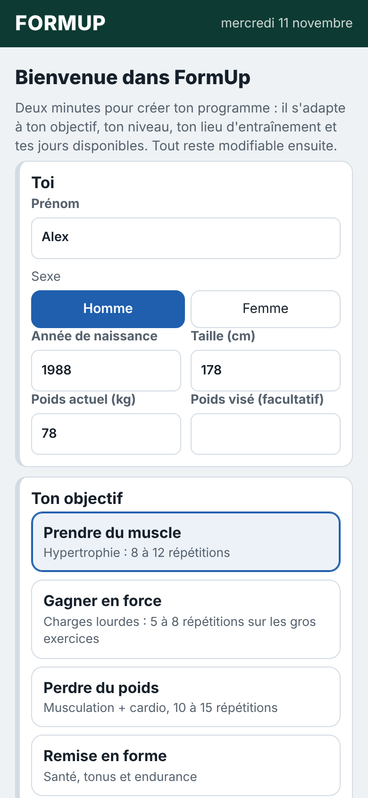
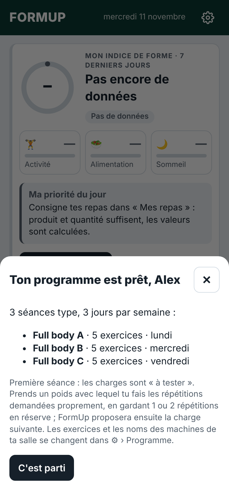
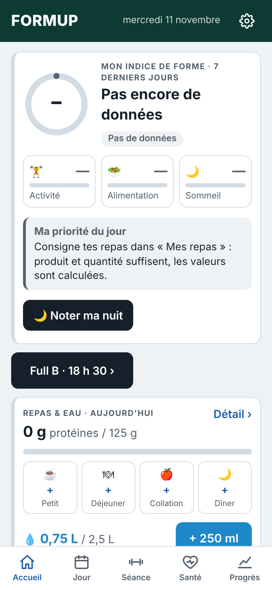
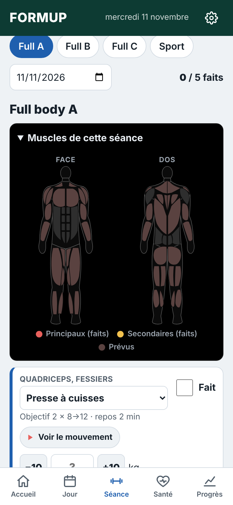
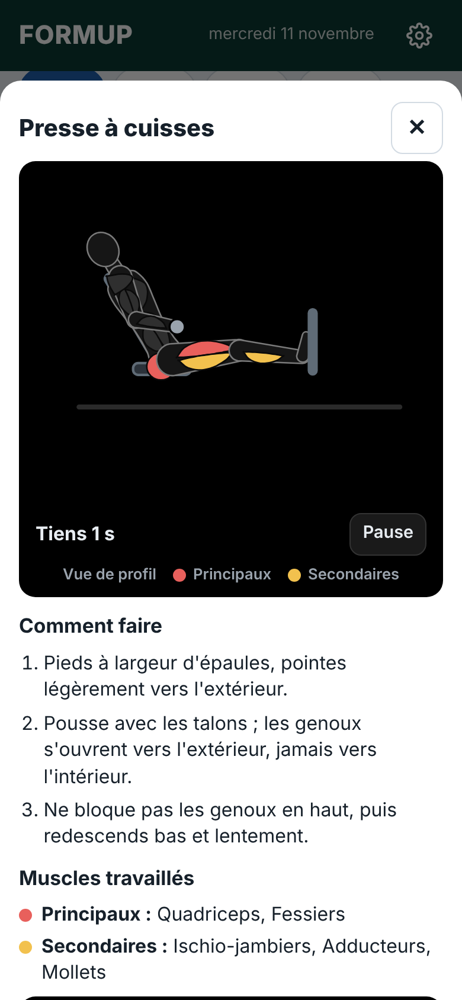

Installer en 3 étapes
TéléchargeTouche le bouton vert ou scanne le QR code avec l'appareil photo de ton téléphone Android.
Ouvre le fichierTouche « FormUp.apk » dans les téléchargements. La première fois, Android demande d'autoriser l'installation depuis cette source : accepte.
Réponds à l'assistantTon objectif, ton niveau, salle ou maison, tes jours : FormUp crée ton programme et ton planning.
En images





Ce que fait FormUp
🏋 Un programme pour toiPrise de muscle, force, perte de poids ou remise en forme, débutant ou confirmé, en salle ou à la maison.
📈 La bonne charge à chaque séanceFormUp te dit quoi viser : une répétition de plus, ou le palier suivant quand toutes les séries sont réussies.
▶ Les mouvements animésChaque exercice montré en animation, muscles en couleur, avec les consignes pour le faire proprement.
⏱ Minuteurs de reposBip et vibration à la fin du repos, écran allumé pendant les séries chronométrées.
🌙 Sommeil, 💧 eau, 🥗 repasNote tes nuits, pointe tes verres d'un geste (même écran verrouillé), suis tes protéines.
★ Ton indice de formeActivité, alimentation et sommeil résumés en une note sur 100, avec ta priorité du jour.
Questions fréquentes
Faut-il un compte ?
Non. Pas de compte, pas d'inscription. Tes données restent sur ton téléphone.
Pourquoi Android parle de « source inconnue » ?
FormUp n'est pas (encore) sur le Play Store : Android demande donc ton accord une seule fois pour l'installer depuis ton navigateur. C'est normal.
Comment avoir les nouvelles versions ?
Depuis l'application : ⚙ Réglages, carte « Mise à jour » en haut. FormUp télécharge et installe la nouvelle version, tes données sont conservées.
Et le coach IA ?
Facultatif. Il donne des conseils personnalisés avec ta propre clé API Claude (payante à l'usage chez Anthropic). Sans lui, tout le reste fonctionne.
Et l'iPhone ?
FormUp existe pour l'instant seulement sur Android.